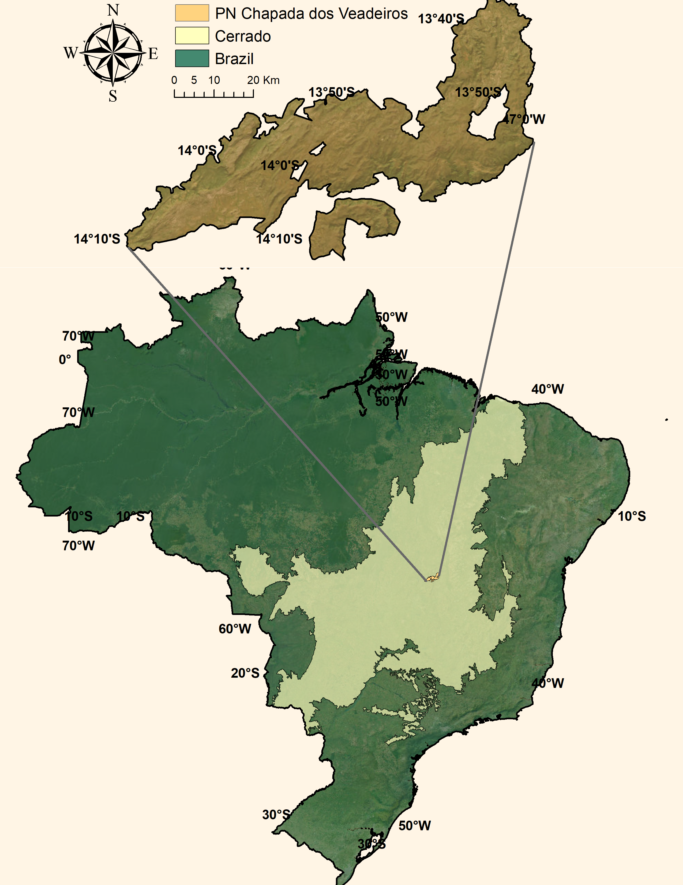
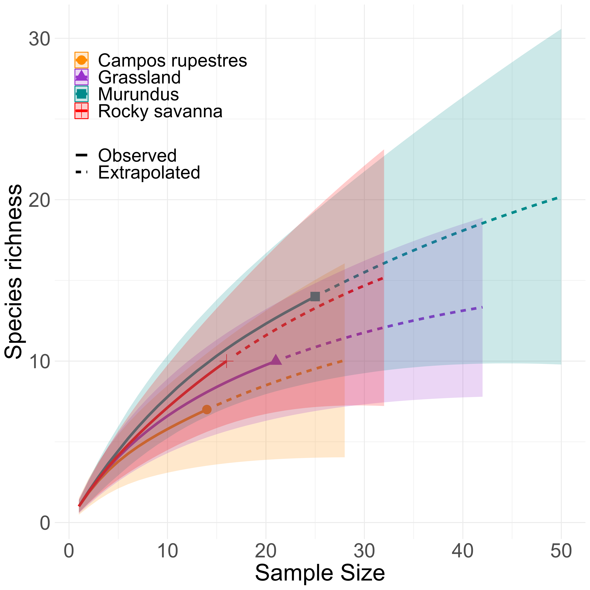

Ecosystem engineers: Accessing how termites diversity drives carbon cycling in a heterogeneous tropical savanna

Termites’ role as promoters of soil nutrient composition and gas flux in the Brazilian Savanna

Yuri Souza 1,
yuri.souza@miami.edu
Amy Zanne 1
aezanne@gmail.com
1 Department of Biology, University of Miami
Introduction
Termites have been recognized as essential ecosystem engineers and biotic drivers worldwide. For instance, some species build mound nests for their inhabitants, and these structures may have secondary ecological roles, such as nutrient hotspots. They also contribute 4% and 2% of CH4 and CO2, respectively, and their ecological roles might be essential to compensate for these emissions.

Figure 1: Earthmounds in the National Park Chapada dos Veadeiros
Objectives
We aim to disentangle 1) how termite assemblages vary in a heterogeneous savanna landscape composed of different vegetation types and soil structures; and 2) how these patterns might, in turn, drive gas flux dynamics across different sites.
Methods
This experiment will be carried out in the Brazilian Cerrado. The first part of this project focuses on collecting termites in different vegetation and soil structures using linear transects and baits. Besides, we will measure gas flux of the soil using LICOR in the sampled termites sites.

Figure 2: National Park Chapada dos Veadeiros

Figure 3: Species curve accumulation from a pilot project
Hypothesis
We hypothesize that termites' effects can locally vary depending on feeding groups and landscape structure and conditions, such as the differences in soil, water, and vegetation.